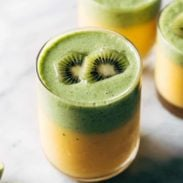

Mango Kiwi Coolers
Colorful, sweet, fresh layers of kiwi and mango in a refreshing cooler.
Author: Lindsay
Total Time: 15 minutes
Yield: 2–4 servings
Ingredients
Mango Layer
- 2 ½ cups frozen diced mango
- ½ cup plain yogurt
- ¼ cup honey (adjust to taste)
- Zest of one lime
- ½–1 cup ice
- Water as needed
Kiwi Layer
- 3 kiwis, peeled
- ½ cup plain yogurt
- 2 tablespoons honey
- ½ cup spinach
- ½ cup ice
- Extra kiwi slices for topping
Instructions
- Blend the mango layer: Combine all mango layer ingredients in a blender. Pour into two large or 3–4 small glasses. Tap the glasses gently to level the surface for clean layering.
- Blend the kiwi layer: Blend all kiwi layer ingredients. Slowly pour on top of the mango mixture. Top with kiwi slices and enjoy immediately!
Tip: Take it up a notch with a touch of fresh mint or basil for extra freshness!
Find this recipe online at Pinch of Yum